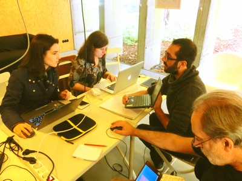
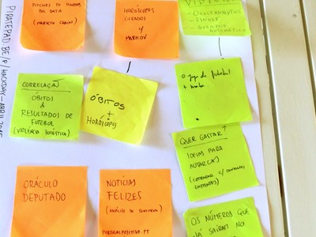

Projetos


Outros projectos: ↗ Open Food Facts;↗ O teu orçamento de estado.
Assina a nossa newsletter para ficares a par dos próximos encontros e das últimas novidades na frente dos dados abertos.
(Só enviamos no máximo duas por mês!)

Somos um grupo de pessoas interessadas nas combinações entre cidadania e tecnologia. Reunimo-nos em encontros mensais para trocar ideias e construir coisas em conjunto.
Num mundo de open data, smart cities, visualizações, webapps, open data e jornalismo de dados, sentimos a falta de um espaço para explorar e questionar o potencial da tecnologia para empoderar a cidadania.

Não é preciso ser hacker para participar. Nestes encontros cabem poetas, engenheiros, artistas, piratas, jornalistas, cientistas e outras almas livres. Só é obrigatória a boa disposição!
Os nossos encontros são marcados ao segundo sábado de cada mês, no UPTEC PINC.
Das 10:00 às 17:00, com pausa para almoço entre às 13:00 e as 14:00!
Temos internet, projetor, whiteboards e alguns comes e bebes. Traz o teu portátil e outros acessórios que possam dar jeito para hackarmos em conjunto.
Pavilhão Jardim, UPTEC PINC
Praça Coronel Pacheco, 2
4050-453 Porto
Segue-nos para ficares a par das novidades:
O Date With Data é uma iniciativa organizada pelo Transparência Hackday Portugal e pela Open Knowledge Portugal.